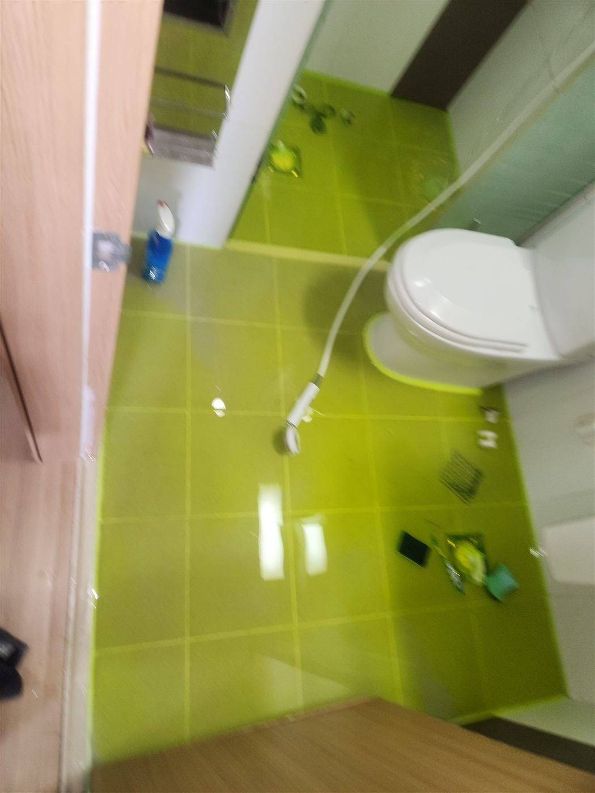
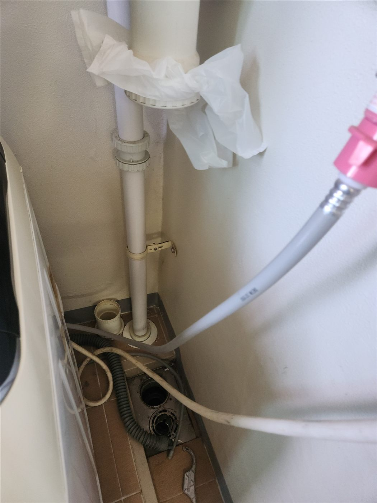
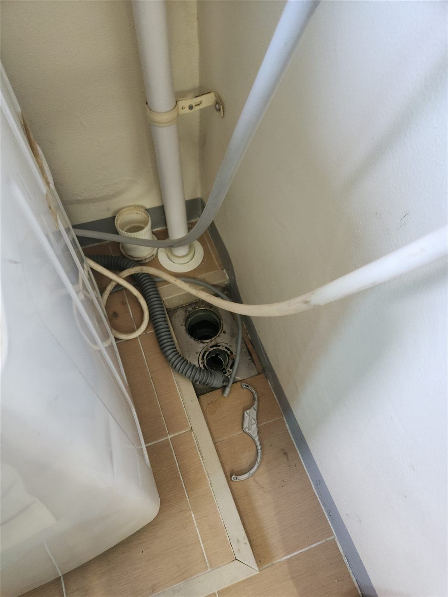
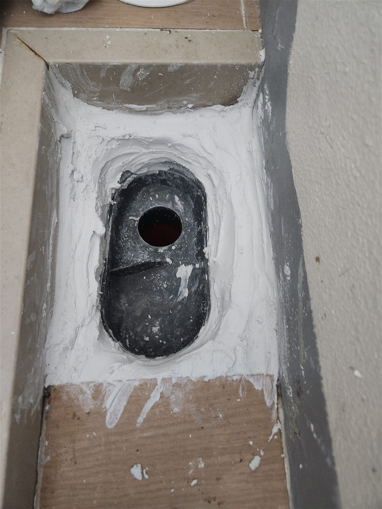
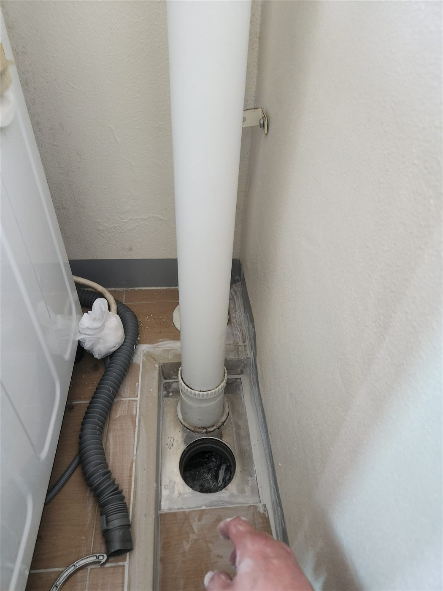
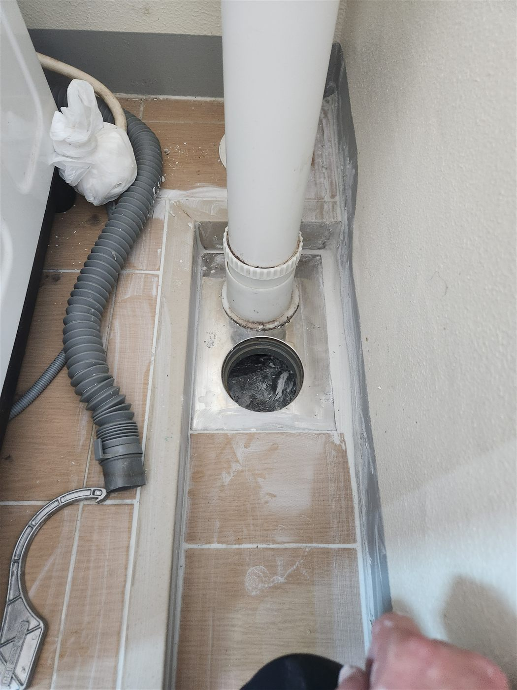

현장 상황
천안시 서북구 두정동 아파트에서 화장실 누수가 의심되어 점검한 현장입니다. 아파트 화장실 누수는 바닥 방수층, 배수구 주변, 별도 배관 계통 등 원인이 여러 가지라서 육안만으로 단정하기 어렵습니다.
담수테스트
먼저 화장실 배수구를 막고 바닥에 물을 채워 수위가 줄어드는지 보는 담수테스트를 했습니다. 사진 속 바닥의 연두색은 물을 눈에 잘 띄게 하려고 색을 입힌 것입니다. 일정 시간 뒤 수위 변화를 보면 바닥 방수층에서 물이 빠지는지 판단할 수 있습니다.


우수관·바닥 배수구 점검
화장실과 함께 세탁기 옆에서 아래로 내려오는 우수관(빗물 배관)과 바닥 배수 부위도 살펴봤습니다. 배관이 바닥을 지나가는 부분은 방수 마감이 오래되면 틈이 생기기 쉬운 자리입니다.


방수 작업
배수구 주변을 정리하고 방수재를 발라 물이 스며드는 틈을 막았습니다. 한 번에 두껍게 바르는 것보다 마르는 시간을 두고 나누어 바르는 것이 더 견고합니다.

작업 완료
방수 후에는 배수구 주변을 마감해 배관과 바닥이 만나는 부분이 막히도록 정리했습니다.


담수테스트 결과를 읽는 방법
담수테스트는 물을 채운 뒤 일정 시간 수위가 줄어드는지를 보는 검사입니다. 수위가 그대로면 바닥 방수가 유지되고 있는 것이고, 줄어든다면 바닥 방수층이나 배수구 주변에서 물이 빠지고 있다는 뜻입니다. 이렇게 화장실 바닥과 우수관·배수 배관 쪽을 나눠 확인하면 어느 계통을 고쳐야 하는지 구분할 수 있습니다.
마무리
아파트는 위아래 세대가 구조체와 배관으로 이어져 있어 한 세대의 누수가 이웃 세대 피해로 번질 수 있습니다. 누수가 의심되면 담수테스트처럼 구조물을 크게 건드리지 않는 검사부터 받아보시는 것이 좋습니다.
저희는 필요한 최소 범위만 열어 작업하고, 작업 전후로 다시 확인합니다. 천안 두정동을 비롯한 서북구 아파트 누수 문의는 편하게 연락 주세요.
접수 안내
비슷한 증상으로 문의하실 곳을 찾고 계신다면 전화로 접수해 주세요. 접수 건은 확인 후 신속하게 연결해 안내해 드리며, 현장 진단 후 견적에 동의하신 뒤에만 작업이 진행됩니다.